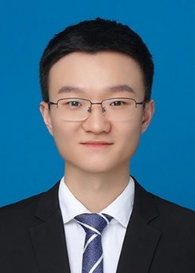
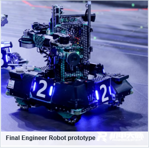
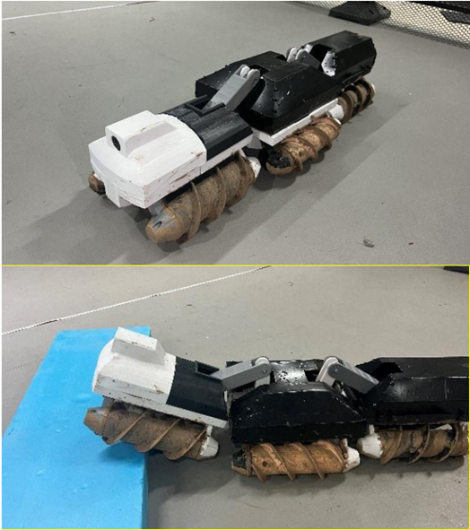
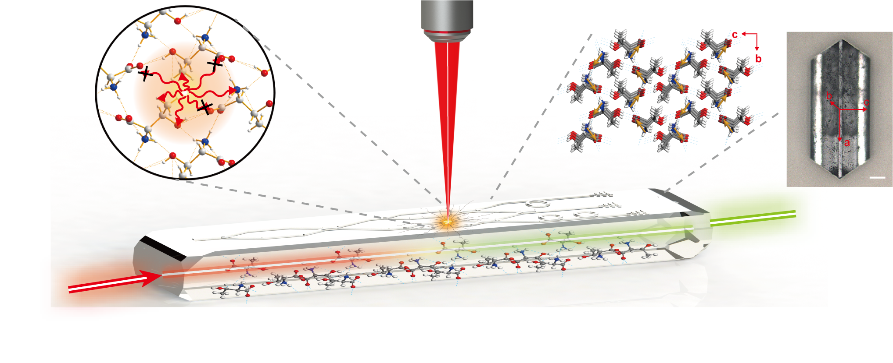
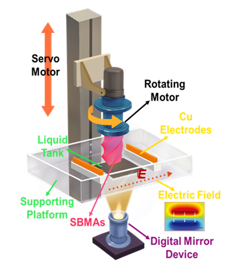
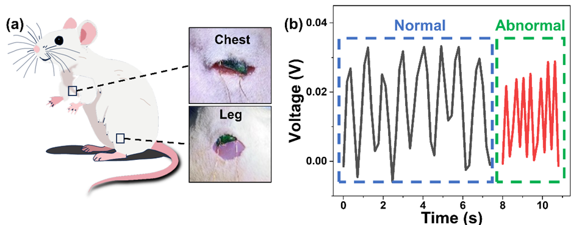

Minimalistic metabolite piezoelectric self-assembly for the development of implantable bioelectronics for in vivo monitoring
Bio-Design and Manufacturing, 9, 563–578.

I am a master's student in Mechanical Engineering at Zhejiang University. Previously, I received my bachelor's degree in Mechanical Design, Manufacturing and Automation from China University of Petroleum, Beijing.
My research interests include robot mechanism design, mechanical simulation and mechatronic prototyping. My experience spans the design, manufacturing, assembly and testing of mobile robots, as well as micro/nano fabrication, optical devices and implantable sensors. I am interested in doctoral research that connects mechanical systems with intelligent manufacturing.
Bio-Design and Manufacturing, 9, 563–578.
Materials & Design, 266, 116177.
ACS Applied Materials & Interfaces, 17, 13690–13701.
Progress in Chemistry, 37(12), 1758–1768.
Three-dimensional femtosecond laser writing of biodegradable photonic circuits in nonlinear amino acid crystals
Submitted · Not yet published
Sep 2024 – Present, M.Eng. in Mechanical Engineering
Sep 2020 – Jul 2024, B.Eng. in Mechanical Design, Manufacturing and Automation

Project Leader
I translated task requirements into the robot architecture, mechanical design and task sequence. The project brought together a mobile chassis, lifting and handling mechanisms, vacuum grasping and onboard storage.
I manufactured most mechanical components and carried the design through assembly, integration and iterative testing.

Principal Designer
I combined screw propulsion with a reconfigurable four bar linkage to explore mobility across different terrains. The design included provisions for environmental sensing and inspection.
My work covered the overall concept, linkage optimisation, sealing design and physical prototyping across three iterations.
Robocon Rabbit Robot, 2023. Participated in the university team's robot development for the Robocon competition. The team reached the national top 16 and received a National First Prize.
My master's research connects short peptide synthesis and crystal preparation with micro/nano fabrication. I have worked with cutting, grinding and polishing, femtosecond laser processing, focused ion beam fabrication, physical vapour deposition and magnetron sputtering, as well as the fabrication and testing of implantable piezoelectric and resistive sensors.
I have also participated in the development of an electric field assisted DLP printing system and short peptide bioinks for bioinspired structures. This work extends my manufacturing experience from robot components to optical and bioelectronic devices.



Robotics project coordination, 2024 season. As SPR team captain, I oversaw 11 development projects, contributed to design discussions, allocated resources and supported project groups. These included autonomous patrol, automatic ball collection, articulated handling, competition dart and golf ball robots, a competition quadrotor, a tree planting robot, and a wheel leg balancing robot.
I led the association when it received the 2023 Capital Universities Students' Favourite Association award in the Innovation and Entrepreneurship category. I also led the team to a National Third Prize in RoboMaster, a National Second Prize in Robocon, and a 3v3 championship in the RoboMaster University League.
I planned the event and directed operations on site, bringing together robotics teams from 11 universities in Beijing. Our university team won the competition.
I organised class activities and contributed to a class recognised as a Beijing Advanced Class Collective and a University Top Ten Exemplary Class Collective.
| 2024 | Outstanding Graduate of Beijing |
|---|---|
| 2020–2021 | National Scholarship |
| 2020–2023 | Advanced Individual in Scientific and Technological Innovation, China University of Petroleum, Beijing |
| 2023 | Capital Universities Students' Favourite Association, Innovation and Entrepreneurship Category |
| 2023 | Beijing Advanced Class Collective |
| 2023 | University Top Ten Exemplary Class Collective |
| 2023 | National First Prize, Robocon University Championship |
|---|---|
| 2023 | First Prize, RoboMaster University League, 3v3 Competition |
| 2023 | National Second Prize, RoboMaster University League, Infantry Challenge |
| 2021, 2022 | National Second Prize, RoboMaster University Championship |
| 2024 | National Third Prize, RoboMaster University Championship |
| 2023 | National Second Prize, China Robot Competition and RoboCup China Open Finals |
| 2023 | National First Prize, China Robot Competition and RoboCup China Open Special Competition |
| 2023 | Second Prize, Challenge Cup Beijing Collegiate Extracurricular Academic and Technological Works Competition |
|---|---|
| 2022 | First Prize, North China Five Provinces Collegiate Robotics Competition |